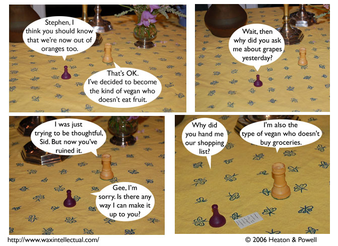

Strip #2
— Friday, June 16, 2006
we’re the type of vegans who make comics
Notes, Thoughts, &c.
Ben’s Notes
I was going to write out an actual grocery list on that tiny piece of paper, but my handwriting doesn’t really look like Stephen’s. So I just drew some squiggly lines.
Lewis’s Notes
No animals were harmed in the making of this strip. Unless Ben or I ate while we were making it. And, then the animals weren’t harmed in the making of the strip so much as before the making of the strip.